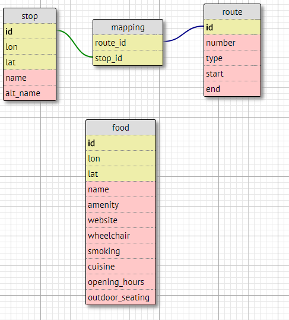

Database-Backed Data Provider db-data-provider%
| (require "db-data-provider.rkt") | package: base |
1 Data Model
database is modelled according to the following ER diagram:
(note that the food table is not used yet as no restaurant data is needed in task 2)

2 Class db-data-provider%
| ||
superclass: object% | ||
|
manages a virtual connection pool to the database
implements all interface messages via queries on the connection
(define db-data-provider% (class* object% (data-provider<%>) (init server user password database poll-millisecs) (super-new) <connection-handling> <stop-handling> <route-handling> <route-update-handling> <food-handling>))
3 Connection Handling
virtual connection pool scales to multiple clients and makes this provider usable with, e.g., web-clients
see the documentation at virtual-connection
(define connection (virtual-connection (connection-pool (lambda () (mysql-connect #:server server #:user user #:password password #:database database)))))
4 Stop Handling
4.1 Stops Caching
stops never change in the database
remember stops in (lazily initialized) top level variable cache
(define all-stops #f)
4.2 Query All Stops
selected with the following simple SQL statement:
"select id,lon,lat,name,alt_name from stop"
(define/public (stops) (unless all-stops (set! all-stops (for/list ([row (query-rows connection <stops-select-statement>)]) (apply stop (vector->list row))))) all-stops)
(define all-stops-by-id #f) (define/public (stops-by-id) (when (not all-stops-by-id) (set! all-stops-by-id (group-stops-by-id (send this stops)))) all-stops-by-id)
5 Route Handling
5.1 Route Caching
routes may change because of updates
provide cache clearing via reset-routes
5.2 Route Querying
5.2.1 Query All Routes
very similar to querying all stops
(define/public (routes) (unless all-routes (set! all-routes (for/list ([row (query-rows connection "select id,number,type,start,end from route")]) (apply route (vector->list row))))) all-routes)
5.2.2 Routes for Stop
first query all route ids from the mapping table for the given stop-id with the following SQL statement (’~a’ is the placeholder for the id, which is formatted in):
"select * from mapping where stop_id = ~a"
(define/public (routes-for-stop stop-id) (let* ([statement (virtual-statement (format <query-mapped-routes-statement> stop-id))] [route-ids (for/list ([mapping (query-rows connection statement)]) (match-let ([(vector route-id _) mapping]) route-id))]) (apply routes-for-ids route-ids)))
then query for all these routes in one step in routes-for-ids
<routes-for-stop-id> (define (routes-for-ids . ids) (if (empty? ids) '() (let* ([id-list (string-join (map ~a ids) ",")] [statement (virtual-statement (format "select * from route where id in (~a)" id-list))] [route-data (query-rows connection statement)]) (for/list ([route-datum route-data]) (apply route (vector->list route-datum))))))
5.2.3 Does Route Exist?
takes an already created route struct
checks for existence of route with the same data, i.e., ignoring route-id
(define/public (route-exists? route) (if (findf (lambda (existent) (and (equal? (route-type existent) (route-type route)) (equal? (route-number existent) (route-number route)) (equal? (route-start existent) (route-start route)) (equal? (route-end existent) (route-end route)))) (send this routes)) #t #f))
5.3 Route Insertion
route data is taken from given route struct (whose route-id is ignored)
route insertion is straightforward with a plain SQL statement
"insert into route(number,type,start,end) values('~a','~a','~a','~a')"
format-route-data helps to put the route’s data into the correct SQL statement places:
(define (format-route-data format-string route) (format format-string (route-number route) (route-type route) (route-start route) (route-end route)))
after insertion, the routes cache is reset (because we know an update happened)
if given, any stops are inserted for the new route
(define/public (insert-route route [stop-ids null]) (unless (route-exists? route) (let ([insert-statement (format-route-data <route-insertion-statement> route)]) (query-exec connection insert-statement) (reset-routes)) (insert-route-stops route stop-ids))) <format-route-data> <insert-route-stops>
5.3.1 Stop Insertion for Given Route
to insert stops we first find out which database id the newly inserted route has:
"select id from route where number='~a' and type='~a' and start='~a' and end='~a'"
then insert (route-id, stop-id) pairs for each given stop-id
insertion is done in one statement with all pairs given at once
(define/public (insert-route-stops route stop-ids) (let* ([id-statement (format-route-data <get-id-for-route-data-statement> route)] [new-route-id (query-value connection id-statement)] [id-pairs (string-join (for*/list ([route-id (list new-route-id)] [stop-id stop-ids]) (format "(~a, ~a)" route-id stop-id)) ",")] [insert-statement (format "insert into mapping(route_id,stop_id) values ~a" id-pairs)]) (query-exec connection insert-statement)))
6 Route Update Handling
6.1 Table Checksum
each MySQL table has a checksum which is updated if the table is modified
remember the checksum which corresponds to the currently cached all-routes variable
(define (query-checksum) (~> (query-row connection "checksum table route") (vector-ref 1) (->int))) (define checksum (query-checksum))
6.2 Handle Callbacks
register callback functions into a top-level variable
invoke-callbacks can be used to notify about updates
(define callbacks (mutable-set)) (define/public (add-callback callback) (set-add! callbacks callback)) (define (invoke-callbacks) (set-for-each callbacks (lambda (callback) (callback))))
6.3 Periodic Checksum Update
use a periodic timer which queries the current checksum
- on changes
update checksum data
clear routes cache variable
invoke registered callbacks
(define timer (new timer% [interval poll-millisecs] [notify-callback (lambda () (let ([new-checksum (query-checksum)]) (unless (equal? new-checksum checksum) (set! checksum new-checksum) (reset-routes) (invoke-callbacks))))]))
7 Food Places
(define all-food #f) (define/public (foods) (unless all-food (set! all-food (for/list ([row (query-rows connection "select id,lon,lat,name,amenity,website,wheelchair,smoking,cuisine,opening_hours,outdoor_seating from food")]) (apply food (vector->list row))))) all-food) (define/public (food-at-place lon lat max-distance) (sort (for/list ([food-info (map (λ (f) (cons (hav:distance-in-meters-deg lon lat (food-lon f) (food-lat f)) f)) (foods))] #:when (<= (car food-info) max-distance)) food-info) (λ (a b) (< (car a) (car b)))))
8 File Structure
<requires> <db-data-provider%> (provide db-data-provider%)